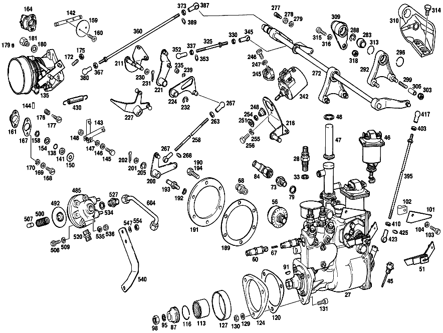

| № | Артикул | Название | Кол. | Примечание | Ограничение |
|---|---|---|---|---|---|
| 27 | A 003 074 68 01 | ТНВД | 1 | Коробка передач | |
| 27 | A 127 070 05 01 | ТНВД | - | Коробка передач | |
| 27 | A 004 074 13 01 | ТНВД | - | Коробка передач | |
| 27 | A 127 070 09 01 | ТНВД | - | Коробка передач | |
| 27 | A 127 070 16 01 | ТНВД | 1 | Коробка передач | |
| 27 | A 127 070 04 99 | SUPERSESSION DUMMY | - | Автоматическая коробка переключения передач | |
| 27 | A 127 070 08 01 | ТНВД | - | Автоматическая коробка переключения передач | |
| 27 | A 004 074 17 01 | ТНВД | - | Автоматическая коробка переключения передач | |
| 27 | A 004 074 72 01 | ТНВД | - | Автоматическая коробка переключения передач | |
| 27 | A 127 070 10 01 | ТНВД | - | Автоматическая коробка переключения передач | |
| 27 | A 127 070 17 01 | ТНВД | 1 | Автоматическая коробка переключения передач | |
| 28 | A 000 078 00 68 | - СОЕДИНИТЕЛЬ | - | ||
| 28 | A 000 078 16 68 | - СОЕДИНИТЕЛЬ | 2 | [005] TO 127 070 01 99/03 99,003 074 68 01,127 070 04 99,127 070 06 01,004 074 17 01 | |
| 28 | A 000 078 08 68 | - СОЕДИНИТЕЛЬ | 2 | [006] TO 127 070 05 01/09 01/16 01,004 074 13 01/72 01,127 070 08 01/17 01 | |
| 29 | A 000 078 02 35 | - ЗАЖИМ | - | ||
| 29 | A 000 078 13 35 | - зажимной элемент | 2 | ||
| 29 | A 000 078 03 35 | - ЗАЖИМ | - | ||
| 29 | A 000 078 14 35 | - зажимной элемент | 2 | ||
| 30 | N 000084 006161 | - Винт | 2 | ||
| 31 | A 094 990 68 10 | - Пружинное кольцо | 2 | ||
| 32 | A 001 074 17 93 | - ПРУЖИНА | 2 | [028] TO 127 070 16 01 [029] TO 127 070 17 01 | |
| 33 | A 001 997 74 40 | - УПЛОТНИТ. КОЛЬЦО | 2 | [005] TO 127 070 01 99/03 99,003 074 68 01,127 070 04 99,127 070 06 01,004 074 17 01 | |
| 33 | A 001 997 30 40 | - Уплотнительное кольцо | 2 | [006] TO 127 070 05 01/09 01/16 01,004 074 13 01/72 01,127 070 08 01/17 01 | |
| 34 | A 000 074 23 15 | - КЛАПАН НАПОРНЫЙ | 2 | [028] TO 127 070 16 01 [029] TO 127 070 17 01 | |
| 35 | A 000 074 92 22 | - ПАРА ПЛУНЖЕРНАЯ | 2 | [028] TO 127 070 16 01 [029] TO 127 070 17 01 | |
| 36 | A 000 074 78 45 | - ФЛАНЕЦ ПРОМЕЖУТОЧНЫЙ | 2 | [028] TO 127 070 16 01 [029] TO 127 070 17 01 | |
| 37 | A 000 074 49 71 | - БОЛТ | 2 | [028] TO 127 070 16 01 [029] TO 127 070 17 01 | |
| 38 | N 007603 006106 | - Уплотнительное кольцо | 2 | [028] TO 127 070 16 01 [029] TO 127 070 17 01 | |
| 39 | A 000 074 03 26 | - ТЯГА РЕГУЛЯТОРА | 2 | [028] TO 127 070 16 01 [029] TO 127 070 17 01 | |
| 40 | A 001 074 19 93 | - ПРУЖИНА | 1 | [028] TO 127 070 16 01 [029] TO 127 070 17 01 | |
| 41 | A 000 074 46 71 | - болт | 2 | [028] TO 127 070 16 01 [029] TO 127 070 17 01 [402] БОЛЬШЕ НЕ ПОСТАВЛЯЕТСЯ | |
| 42 | A 000 074 12 32 | - ВТУЛКА | 2 | [028] TO 127 070 16 01 [029] TO 127 070 17 01 | |
| 43 | A 001 074 07 93 | - ПРУЖИНА | 2 | [028] TO 127 070 16 01 [029] TO 127 070 17 01 [402] БОЛЬШЕ НЕ ПОСТАВЛЯЕТСЯ | |
| 44 | A 000 074 10 29 | - ТОЛКАТЕЛЬ | 2 | [028] TO 127 070 16 01 [402] БОЛЬШЕ НЕ ПОСТАВЛЯЕТСЯ | |
| 44 | A 000 074 14 29 | - ТОЛКАТЕЛЬ | 2 | [029] TO 127 070 17 01 | |
| 45 | A 000 074 18 60 | - ЩУП МАСЛЯНЫЙ | 1 | ||
| 46 | A 000 074 02 88 | - MAГНИТ | 1 | ||
| 47 | A 000 203 77 75 | - РЕГУЛЯТОР | - | ||
| 47 | A 001 203 61 75 | - РЕГУЛЯТОР | 2 | [005] TO 127 070 01 99/03 99,003 074 68 01,127 070 04 99,127 070 06 01,004 074 17 01 | |
| 47 | A 001 203 61 75 | - РЕГУЛЯТОР | 1 | [006] TO 127 070 05 01/09 01/16 01,004 074 13 01/72 01,127 070 08 01/17 01 | |
| 48 | A 000 203 09 80 | - ПРОКЛАДКА УПЛОТНИТЕЛЬНАЯ | 2 | [005] TO 127 070 01 99/03 99,003 074 68 01,127 070 04 99,127 070 06 01,004 074 17 01 | |
| 48 | N 007603 020100 | - Уплотнительное кольцо | 1 | [006] TO 127 070 05 01/09 01/16 01,004 074 13 01/72 01,127 070 08 01/17 01 | |
| 51 | A 000 074 28 27 | - РЫЧАГ | 1 | [005] TO 127 070 01 99/03 99,003 074 68 01,127 070 04 99,127 070 06 01,004 074 17 01 | |
| 51 | A 000 074 41 27 | - РЫЧАГ | 1 | [006] TO 127 070 05 01/09 01/16 01,004 074 13 01/72 01,127 070 08 01/17 01 | |
| 56 | A 000 075 02 32 | - ФИЛЬТР | 1 | [005] TO 127 070 01 99/03 99,003 074 68 01,127 070 04 99,127 070 06 01,004 074 17 01 | |
| 56 | A 000 075 06 32 | - Воздушный фильтр | 1 | [006] TO 127 070 05 01/09 01/16 01,004 074 13 01/72 01,127 070 08 01/17 01 | |
| 60 | A 000 074 07 84 | - КЛАПАН | 1 | ||
| 67 | A 000 091 18 15 | - ПРУЖИНА | 1 | ||
| 68 | N 915006 008002 | - Штуцер | 1 | [005] TO 127 070 01 99/03 99,003 074 68 01,127 070 04 99,127 070 06 01,004 074 17 01 | |
| 73 | A 000 997 67 62 | - КОЛЬЦО РЕЗЬБОВОЕ | 1 | [006] TO 127 070 05 01/09 01/16 01,004 074 13 01/72 01,127 070 08 01/17 01 | |
| 79 | N 007603 014100 | - Уплотнительное кольцо | 1 | 14X18\-AL [006] TO 127 070 05 01/09 01/16 01,004 074 13 01/72 01,127 070 08 01/17 01 | |
| 84 | A 189 200 00 84 | - СОЕДИНИТЕЛЬ | 1 | [006] TO 127 070 05 01/09 01/16 01,004 074 13 01/72 01,127 070 08 01/17 01 | |
| 85 | A 000 074 36 10 | - РАСПРЕДВАЛ | 1 | [028] TO 127 070 16 01 [029] TO 127 070 17 01 | |
| 85D | A 000 074 09 51 | - ДИСТАНЦИОННОЕ КОЛЬЦО | NB | 1,6 MM [028] TO 127 070 16 01 [029] TO 127 070 17 01 | |
| 85D | A 000 074 46 52 | - РАСПОРНАЯ ШАЙБА | NB | 2,0 MM [028] TO 127 070 16 01 [029] TO 127 070 17 01 [402] БОЛЬШЕ НЕ ПОСТАВЛЯЕТСЯ | |
| 85D | A 000 074 10 51 | - ДИСТАНЦИОННОЕ КОЛЬЦО | NB | 2,5 MM [028] TO 127 070 16 01 [029] TO 127 070 17 01 | |
| 85D | A 000 074 11 51 | - ДИСТАНЦИОННОЕ КОЛЬЦО | NB | 3,0 MM [028] TO 127 070 16 01 [029] TO 127 070 17 01 | |
| 86 | A 000 074 48 52 | - РАСПОРНАЯ ШАЙБА | NB | 0.1 MM [028] TO 127 070 16 01 [029] TO 127 070 17 01 [402] БОЛЬШЕ НЕ ПОСТАВЛЯЕТСЯ | |
| 86 | A 000 074 32 52 | - Дистанционная шайба | NB | 0.12 MM [028] TO 127 070 16 01 [029] TO 127 070 17 01 | |
| 86 | A 000 074 33 52 | - Дистанционная шайба | NB | 0.14 MM [028] TO 127 070 16 01 [029] TO 127 070 17 01 | |
| 86 | A 000 074 49 52 | - РАСПОРНАЯ ШАЙБА | NB | 0.15 MM [028] TO 127 070 16 01 [029] TO 127 070 17 01 | |
| 86 | A 000 074 34 52 | - Дистанционная шайба | NB | ПО НЕОБХОДИМОСТИ 0.16 MM [028] TO 127 070 16 01 [029] TO 127 070 17 01 | |
| 86 | A 000 074 35 52 | - Дистанционная шайба | NB | ПО НЕОБХОДИМОСТИ 0.18 MM [028] TO 127 070 16 01 [029] TO 127 070 17 01 | |
| 86 | A 000 074 36 52 | - Дистанционная шайба | NB | ПО НЕОБХОДИМОСТИ 0.3 MM [402] БОЛЬШЕ НЕ ПОСТАВЛЯЕТСЯ [028] TO 127 070 16 01 [029] TO 127 070 17 01 | |
| 86 | A 000 074 37 52 | - Дистанционная шайба | NB | ПО НЕОБХОДИМОСТИ 0.5mm [402] БОЛЬШЕ НЕ ПОСТАВЛЯЕТСЯ [028] TO 127 070 16 01 [029] TO 127 070 17 01 | |
| 86C | A 003 981 20 25 | - ШАРИКОПОДШИПНИК | 2 | [028] TO 127 070 16 01 [029] TO 127 070 17 01 [402] БОЛЬШЕ НЕ ПОСТАВЛЯЕТСЯ | |
| 86H | N 006503 017100 | - УПЛОТНИТ. КОЛЬЦО | 1 | [028] TO 127 070 16 01 [029] TO 127 070 17 01 | |
| 87 | A 621 077 00 09 | - Поводок | 1 | ||
| 91 | N 006888 003001 | - Сегментная шпонка | 1 | ||
| 95 | N 912004 012100 | - Пружинное кольцо | 1 | ||
| 98 | N 000936 012010 | - Гайка | - | ||
| 98 | A 094 990 57 09 | - Шестигранная гайка | 1 | ||
| 99 | A 000 074 21 59 | - УПЛОТНИТ. КОЛЬЦО | 1 | СБОКУ | |
| 101 | A 189 074 02 40 | - ДЕРЖАТЕЛЬ | 1 | ||
| 102 | N 072571 001024 | ХОМУТ | 1 | ||
| 103 | N 000084 004139 | Винт | 1 | ||
| 104 | N 912004 004102 | Пружинное кольцо | 1 | ||
| 107 | A 000 078 01 95 | К-Т ФОРСУНОК | 2 | ||
| 108 | A 127 078 07 44 | ФЛАНЕЦ | 3 | ||
| 109 | N 009021 006205 | Шайба | - | ||
| 109 | N 009021 006208 | Шайба | 3 | 6 MM | |
| 110 | A 094 990 68 10 | Пружинное кольцо | 3 | ||
| 111 | N 000934 006007 | Гайка | 3 | ||
| 112 | A 198 070 02 32 | ПРОВОД | 1 | [008] TO 127 070 01 99/03 99/04 99 | |
| 113 | A 621 077 00 16 | Соединительная втулка | 1 | ||
| 116 | N 009045 032000 | Пруж. стопорное кольцо | 1 | ||
| 120 | A 199 077 02 79 | ПРОКЛАДКА УПЛОТНИТЕЛЬНАЯ | 2 | ТНВД НА БЛОКЕ ЦИЛИНДРОВ | |
| 124 | A 199 077 02 80 | ПРОКЛАДКА УПЛОТНИТЕЛЬНАЯ | 1 | ТНВД НА БЛОКЕ ЦИЛИНДРОВ | |
| 127 | A 199 077 00 46 | ПОДШИПНИК | 1 | ТНВД НА БЛОКЕ ЦИЛИНДРОВ | |
| 129 | N 000125 008407 | ШАЙБА | 2 | ТНВД НА БЛОКЕ ЦИЛИНДРОВ | |
| 130 | N 000934 008013 | Гайка | 3 | ТНВД НА БЛОКЕ ЦИЛИНДРОВ | |
| 131 | N 304014 008004 | Винт с 6-гранной головкой | - | ||
| 131 | N 304014 008001 | Винт с 6-гранной головкой | 1 | ТНВД НА БЛОКЕ ЦИЛИНДРОВ; M8X70\-10.9 | |
| 135 | A 000 140 14 53 | КОРПУС ЗАСЛОНКИ | - | ||
| 135 | A 000 140 02 07 | КОРПУС ЗАСЛОНКИ | 1 | ||
| 135 | A 000 140 35 53 | КОРПУС ЗАСЛОНКИ | 1 | ||
| 138 | A 000 997 71 40 | - УПЛОТНИТ. КОЛЬЦО | 2 | ||
| 141 | N 006503 008200 | - УПЛОТНИТ. КОЛЬЦО | 1 | ||
| 142 | A 000 141 05 11 | - ПОДДЕРЖИВАЮЩИЙ МОСТ | 1 | ||
| 143 | A 000 141 05 12 | - РЫЧАГ | 1 | ||
| 144 | N 001476 002007 | - ШТИФТ ПАЗА | 1 | ||
| 145 | N 000933 005019 | - Винт | - | ||
| 145 | N 000933 005066 | - Винт | - | ||
| 145 | A 094 990 44 09 | - Винт с 6-гранной головкой | 1 | M5X20 | |
| 146 | N 000125 005300 | - ШАЙБА | 2 | ||
| 147 | N 912004 005100 | - Пружинное кольцо | 1 | ||
| 148 | N 000934 005008 | - Гайка | 1 | M5 | |
| 150 | A 000 990 51 40 | - ШАЙБА | NB | 0.1 MM | |
| 150 | A 000 990 52 40 | - ШАЙБА | NB | 0.5mm | |
| 150 | A 000 990 53 40 | - ШАЙБА | NB | 1.0 MM | |
| 154 | A 000 990 25 40 | - ШАЙБА | NB | 0.1 MM [402] БОЛЬШЕ НЕ ПОСТАВЛЯЕТСЯ | |
| 154 | A 000 990 37 40 | - ШАЙБА | - | ||
| 154 | A 000 990 36 40 | - ШАЙБА | NB | 0.5mm | |
| 158 | A 094 990 55 05 | - Стопорное кольцо | 1 | ||
| 159 | A 000 141 01 10 | - ВСАСЫВАЮЩАЯ ЗАДВИЖКА | 1 | ||
| 160 | A 000 071 02 71 | - БОЛТ | - | ||
| 160 | N 000964 004004 | - Винт | 2 | ||
| 161 | A 000 141 00 19 | - КРЫШКА | 1 | Коробка передач | |
| 161 | A 000 141 00 19 | - КРЫШКА | 1 | Автоматическая коробка переключения передач | |
| 164 | A 000 545 34 04 | - ВЫКЛЮЧАТЕЛЬ | 1 | Коробка передач | |
| 164 | A 000 545 33 04 | - ВЫКЛЮЧАТЕЛЬ | 1 | ||
| 167 | A 000 141 00 80 | - ПРОКЛАДКА УПЛОТНИТЕЛЬНАЯ | 1 | ||
| 168 | A 094 990 26 05 | - Винт | 2 | Коробка передач | |
| 168 | A 094 990 26 05 | - Винт | 2 | Автоматическая коробка переключения передач | |
| 168 | N 000084 005158 | - Винт | 2 | Автоматическая коробка переключения передач | |
| 169 | N 000125 005300 | - ШАЙБА | 2 | Автоматическая коробка переключения передач | |
| 170 | N 912004 005100 | - Пружинное кольцо | 2 | ||
| 172 | N 000551 006005 | - Штифт с резьбой | 2 | ||
| 175 | N 000934 006013 | - Гайка | - | ||
| 175 | N 304032 006008 | - Шестигранная гайка | 2 | ||
| 176 | A 001 993 40 01 | - ПРУЖИНА | 1 | ||
| 177 | A 000 990 27 20 | - БОЛТ | 1 | ||
| 179 | A 000 071 04 70 | - БОЛТ | 1 | [402] БОЛЬШЕ НЕ ПОСТАВЛЯЕТСЯ | |
| 180 | A 001 997 37 40 | - УПЛОТНИТ. КОЛЬЦО | 1 | РАЗЪЕМ ВАКУУМ.ТРУБОПРОВ. | |
| 181 | A 000 997 38 72 | - ШТУЦЕР | 1 | РАЗЪЕМ ВАКУУМ.ТРУБОПРОВ. | |
| 191 | A 127 070 07 24 | ОПОРА ПОДШИПНИКА | - | Коробка передач | |
| 191 | A 127 070 15 24 | ОПОРА ПОДШИПНИКА | - | Коробка передач | |
| 191 | A 127 070 16 24 | ОПОРА ПОДШИПНИКА | - | ||
| 191 | A 127 070 17 24 | ОПОРА ПОДШИПНИКА | - | ||
| 191 | A 130 070 02 24 | ОПОРА ПОДШИПНИКА | 1 | ||
| 192 | N 000137 008202 | - Пружинная шайба | - | ||
| 192 | N 000137 008204 | - Пружинная шайба | - | ||
| 192 | N 000137 008212 | - Пружинная шайба | 1 | TO 127 070 16 24,127 070 17 24 | |
| 193 | A 188 072 00 74 | - БОЛТ | - | Коробка передач | |
| 193 | A 616 072 00 74 | - Палец | 1 | TO 127 070 16 24,127 070 17 24 СМ. ГРУППУ 01, № РИС.: 67 [402] БОЛЬШЕ НЕ ПОСТАВЛЯЕТСЯ | |
| 194 | N 000912 006066 | Винт | 6 | ОПОРН. ЭЛЕМЕНТ НА БЛОКЕ ЦИЛ.; M6X15 | |
| 200 | A 127 070 10 22 | РЫЧАГ | 1 | Коробка передач | |
| 200 | A 127 070 13 22 | РЫЧАГ | 1 | ||
| 200 | A 127 070 16 22 | РЫЧАГ | - | ||
| 200 | A 127 070 19 22 | РЫЧАГ | - | ||
| 200 | A 127 070 20 22 | РЫЧАГ | 1 | ||
| 201 | N 000125 008418 | Шайба | - | Коробка передач | |
| 201 | N 000125 008443 | Шайба | 1 | 8 MM Коробка передач | |
| 202 | N 000094 002059 | Шплинт | 1 | 2X14 MM Коробка передач | |
| 202 | A 094 990 30 05 | Шплинт | 1 | 2,0X14 Коробка передач | |
| 205 | N 006799 007001 | Стопорная шайба | - | ||
| 205 | N 006799 007007 | Стопорная шайба | 1 | ||
| 211 | A 127 070 30 40 | ДЕРЖАТЕЛЬ | 1 | РЫЧАГ РЕГУЛИРВОЧНЫЙ Коробка передач | |
| 216 | A 127 070 28 40 | ДЕРЖАТЕЛЬ | 1 | РЫЧАГ РЕГУЛИРВОЧНЫЙ Автоматическая коробка переключения передач | |
| 221 | A 127 070 09 22 | РЫЧАГ | 1 | Коробка передач | |
| 221 | A 127 070 12 22 | РЫЧАГ | 1 | Коробка передач | |
| 221 | A 127 070 00 21 | РЫЧАГ | - | Коробка передач | |
| 221 | A 127 070 02 21 | РЫЧАГ | 1 | Коробка передач | |
| 224 | A 127 070 15 22 | РЫЧАГ | - | Коробка передач | |
| 224 | A 127 070 00 98 | К-Т ДЕТАЛЕЙ | 1 | Коробка передач | |
| 224 | A 127 070 14 22 | РЫЧАГ | 1 | Автоматическая коробка переключения передач | |
| 227 | A 127 070 01 21 | РЫЧАГ | 1 | Автоматическая коробка переключения передач | |
| 230 | N 000125 008418 | Шайба | - | ||
| 230 | N 000125 008443 | Шайба | 1 | РЕГУЛИР. РЫЧАГ НА ДЕРЖАТЕЛЕ; 8 MM | |
| 231 | N 000094 002059 | Шплинт | 1 | РЕГУЛИР. РЫЧАГ НА ДЕРЖАТЕЛЕ; 2X14 MM | |
| 231 | A 094 990 30 05 | Шплинт | 1 | РЕГУЛИР. РЫЧАГ НА ДЕРЖАТЕЛЕ; 2,0X14 | |
| 232 | A 094 990 61 07 | Стопорная шайба | 1 | РЕГУЛИР. РЫЧАГ НА ДЕРЖАТЕЛЕ | |
| 232 | N 006799 007007 | Стопорная шайба | 2 | Коробка передач | |
| 235 | A 180 072 03 93 | Ролик | 1 | Коробка передач | |
| 239 | N 006799 004001 | Стопорная шайба | 1 | Коробка передач | |
| 242 | A 000 072 05 00 | MAГНИТ | 1 | Автоматическая коробка переключения передач | |
| 245 | A 000 546 70 41 | - Кабельный соединитель | 1 | Автоматическая коробка переключения передач | |
| 248 | A 001 997 06 81 | - КАБ. ВТУЛКА | 1 | Автоматическая коробка переключения передач | |
| 251 | A 130 990 00 50 | ГАЙКА | 1 | Автоматическая коробка переключения передач | |
| 254 | N 000934 005004 | Гайка | - | M5 Автоматическая коробка переключения передач | |
| 254 | N 000934 005008 | Гайка | 1 | M5 Автоматическая коробка переключения передач | |
| 255 | N 000137 004201 | Пружинная шайба | - | Автоматическая коробка переключения передач | |
| 255 | N 000137 004202 | Пружинная шайба | 3 | МАГНИТ НА КРОНШТЕЙНЕ Автоматическая коробка переключения передач | |
| 256 | N 000933 004027 | Винт | - | Автоматическая коробка переключения передач | |
| 256 | N 000933 004037 | БОЛТ | 3 | МАГНИТ НА КРОНШТЕЙНЕ Автоматическая коробка переключения передач | |
| 258 | N 900331 005068 | Тяга | 1 | Коробка передач | |
| 258 | N 900331 005106 | Тяга | 1 | ||
| 258 | N 900331 005051 | Тяга | - | ||
| 258 | A 119 070 26 75 | ТЯГА | 1 | [402] БОЛЬШЕ НЕ ПОСТАВЛЯЕТСЯ | |
| 263 | N 000934 005004 | Гайка | - | M5 | |
| 263 | N 000934 005008 | Гайка | 2 | M5 | |
| 267 | A 000 991 02 20 | ЦАПФА СФЕРИЧЕСКАЯ | - | ||
| 267 | A 000 991 16 22 | Шаровой подпятник | - | ||
| 267 | A 000 991 89 22 | ПОДПЯТНИК ШАРОВОЙ | 2 | ||
| 267 | A 000 993 04 61 | Шаровой подпятник | 2 | ||
| 268 | N 071805 008300 | - Пруж. стопорное кольцо | 2 | ||
| 272 | A 127 070 06 23 | ВАЛ | 1 | ||
| 272 | A 127 070 13 23 | ВАЛ | 1 | ||
| 277 | N 071803 008101 | - Шаровая цапфа | 1 | РЫЧАГ РЕГУЛИРВОЧНЫЙ Коробка передач | |
| 277 | N 071803 008101 | - Шаровая цапфа | 2 | РЫЧАГ РЕГУЛИРВОЧНЫЙ | |
| 278 | N 000934 005008 | - Гайка | 1 | РЫЧАГ РЕГУЛИРВОЧНЫЙ; M5 Коробка передач | |
| 278 | N 000934 005004 | - Гайка | - | M5 | |
| 278 | N 000934 005008 | - Гайка | 2 | РЫЧАГ РЕГУЛИРВОЧНЫЙ; M5 | |
| 279 | N 000137 005203 | - Пружинная шайба | 1 | РЫЧАГ РЕГУЛИРВОЧНЫЙ Коробка передач | |
| 279 | N 000137 005201 | - Пружинная шайба | 2 | РЫЧАГ РЕГУЛИРВОЧНЫЙ | |
| 283 | A 127 072 01 85 | - ПАЛЕЦ С ШАРОВОЙ ГОЛОВКОЙ | 2 | ||
| 288 | N 006799 008002 | - Стопорная шайба | - | ||
| 288 | A 094 990 61 07 | - Стопорная шайба | 2 | ||
| 292 | A 127 070 20 24 | - ОПОРА ПОДШИПНИКА | 1 | ||
| 296 | A 000 994 54 35 | - СТОПОРН. КОЛЬЦО | 1 | ||
| 299 | N 000835 006031 | - Винт | - | ||
| 299 | N 000835 006082 | - Винт | 2 | ||
| 303 | A 127 990 01 51 | - ГАЙКА | 2 | ||
| 305 | A 127 072 03 50 | ВТУЛКА | 1 | CONTROL SHAFT TO INTAKE MANIFOLD | |
| 309 | A 127 070 29 40 | ДЕРЖАТЕЛЬ | 1 | CONTROL SHAFT TO INTAKE MANIFOLD | |
| 313 | A 000 994 54 35 | - СТОПОРН. КОЛЬЦО | 2 | CONTROL SHAFT TO INTAKE MANIFOLD | |
| 315 | N 000912 008007 | БОЛТ | 1 | CONTROL SHAFT TO INTAKE MANIFOLD | |
| 316 | N 000137 008200 | Пружинная шайба | 1 | CONTROL SHAFT TO INTAKE MANIFOLD | |
| 318 | A 127 990 01 51 | ГАЙКА | 2 | CONTROL SHAFT TO INTAKE MANIFOLD | |
| 325 | N 900331 005042 | Тяга | 1 | РЕГУЛ. РЫЧАГ НА РЕГУЛ. ВАЛУ Коробка передач | |
| 325 | N 900331 005083 | Тяга | 1 | РЕГУЛ. РЫЧАГ НА РЕГУЛ. ВАЛУ Коробка передач | |
| 325 | A 127 070 28 75 | ТЯГА | 1 | РЕГУЛ. РЫЧАГ НА РЕГУЛ. ВАЛУ | |
| 325 | A 127 070 40 75 | ТЯГА | 1 | РЕГУЛ. РЫЧАГ НА РЕГУЛ. ВАЛУ | |
| 330 | N 000934 005008 | Гайка | 2 | РЕГУЛ. РЫЧАГ НА РЕГУЛ. ВАЛУ; M5 Коробка передач | |
| 330 | N 000934 005004 | Гайка | 1 | РЕГУЛ. РЫЧАГ НА РЕГУЛ. ВАЛУ; M5 | |
| 337 | N 000934 005010 | Гайка | 1 | РЕГУЛ. РЫЧАГ НА РЕГУЛ. ВАЛУ | |
| 345 | A 000 991 16 22 | Шаровой подпятник | - | Коробка передач | |
| 345 | A 000 991 89 22 | ПОДПЯТНИК ШАРОВОЙ | 2 | РЕГУЛ. РЫЧАГ НА РЕГУЛ. ВАЛУ Коробка передач | |
| 345 | A 000 993 04 61 | Шаровой подпятник | 2 | РЕГУЛ. РЫЧАГ НА РЕГУЛ. ВАЛУ Коробка передач | |
| 345 | A 000 991 89 22 | ПОДПЯТНИК ШАРОВОЙ | 1 | ||
| 345 | A 000 993 04 61 | Шаровой подпятник | 1 | ||
| 352 | A 000 991 17 22 | Шаровой подпятник | - | ||
| 352 | A 000 991 90 22 | Шаровой подпятник | 1 | LEFT\-HAND THREAD CONTROL LEVER TO CONTROL SHAFT | |
| 353 | N 071805 008300 | - Пруж. стопорное кольцо | 2 | РЕГУЛ. РЫЧАГ НА РЕГУЛ. ВАЛУ | |
| 360 | A 127 070 18 75 | ТЯГА | 1 | CONTROL SHAFT TO THROTTLE VALVE HOUSING, 449 MM Коробка передач | |
| 360 | A 127 070 24 75 | ТЯГА | 1 | CONTROL SHAFT TO THROTTLE VALVE HOUSING, 249 MM | |
| 360 | A 127 070 43 75 | ТЯГА | 1 | CONTROL SHAFT TO THROTTLE VALVE HOUSING | |
| 367 | N 000934 005004 | Гайка | - | M5 | |
| 367 | N 000934 005008 | Гайка | 1 | CONTROL SHAFT TO THROTTLE VALVE HOUSING; M5 | |
| 373 | N 000934 005010 | Гайка | 1 | CONTROL SHAFT TO THROTTLE VALVE HOUSING | |
| 380 | A 000 991 16 22 | Шаровой подпятник | - | ||
| 380 | A 000 991 89 22 | ПОДПЯТНИК ШАРОВОЙ | 1 | CONTROL SHAFT TO THROTTLE VALVE HOUSING | |
| 380 | A 000 993 04 61 | Шаровой подпятник | 1 | CONTROL SHAFT TO THROTTLE VALVE HOUSING | |
| 387 | A 000 991 17 22 | Шаровой подпятник | - | ||
| 387 | A 000 991 90 22 | Шаровой подпятник | 1 | LEFT\-HAND THREAD CONTROL SHAFT TO VENTURI CONTROL UNIT | |
| 389 | N 071805 008300 | - Пруж. стопорное кольцо | 2 | CONTROL SHAFT TO THROTTLE VALVE HOUSING | |
| 395 | A 127 070 20 75 | ТЯГА | 1 | CONTROL SHAFT TO INJECTION PUMP,386 MM Коробка передач | |
| 395 | A 127 070 32 75 | ТЯГА | 1 | CONTROL SHAFT TO INJECTION PUMP,207 MM | |
| 403 | N 000934 005004 | Гайка | - | M5 | |
| 403 | N 000934 005008 | Гайка | 1 | CONTROL SHAFT TO INJECTION PUMP; M5 | |
| 410 | N 000934 005010 | Гайка | 1 | CONTROL SHAFT TO INJECTION PUMP | |
| 417 | A 000 991 16 22 | Шаровой подпятник | - | ||
| 417 | A 000 991 89 22 | ПОДПЯТНИК ШАРОВОЙ | 1 | CONTROL SHAFT TO INJECTION PUMP | |
| 417 | A 000 993 04 61 | Шаровой подпятник | 1 | CONTROL SHAFT TO INJECTION PUMP | |
| 423 | A 000 991 17 22 | Шаровой подпятник | - | ||
| 423 | A 000 991 90 22 | Шаровой подпятник | 1 | LEFT\-HAND THREAD CONTROL SHAFT TO INJECTION PUMP | |
| 425 | N 071805 008300 | - Пруж. стопорное кольцо | 2 | CONTROL SHAFT TO INJECTION PUMP | |
| 430 | A 110 993 17 10 | пружина | 1 | ||
| 436 | A 127 070 08 33 | ПРОВОД | 1 | ||
| 436 | A 127 070 20 33 | ПРОВОД | 1 | ||
| 443 | A 127 070 09 33 | ПРОВОД | 1 | ||
| 449 | A 127 070 02 33 | ПРОВОД | 1 | ЦИЛИНДР №1 | |
| 457 | A 127 070 03 33 | ПРОВОД | 1 | ЦИЛИНДР №2 Коробка передач | |
| 457 | A 127 070 10 33 | ПРОВОД | 1 | ЦИЛИНДР №2 | |
| 464 | A 127 070 04 33 | ПРОВОД | 1 | ЦИЛИНДР №3 | |
| 471 | A 127 070 05 33 | ПРОВОД | 2 | CYLINDER NOS. 4 AND 6 | |
| 478 | A 127 070 06 33 | ПРОВОД | 1 | ЦИЛИНДР №5 | |
| 485 | A 127 070 11 68 | ПОЛОВИНА АМОРТ.СТОЙКИ | 2 | ||
| 492 | A 127 070 00 52 | - MEMБРАНА | 2 | ||
| 500 | A 127 993 00 01 | - ПРУЖИНА | 2 | ||
| 507 | A 186 300 02 74 | - БОЛТ | 2 | ||
| 508 | N 000933 006130 | - Винт | 12 | ||
| 513 | N 007627 008008 | РЕЗЬБ. ШТУЦЕР | 1 | ||
| 520 | N 007611 006002 | ШТУЦЕР ДВОЙНОЙ | - | ||
| 520 | N 915006 006003 | ШТУЦЕР ДВОЙНОЙ | 1 | 6 MM | |
| 527 | A 127 997 02 72 | ШТУЦЕР | 1 | 3.5 MM | |
| 534 | A 636 997 02 44 | Уплотнительное кольцо | 3 | ||
| 535 | A 094 990 68 10 | Пружинное кольцо | 2 | ||
| 536 | N 000934 006013 | Гайка | - | ||
| 536 | N 304032 006008 | Шестигранная гайка | 2 | ||
| 540 | A 127 078 15 41 | ДЕРЖАТЕЛЬ | 1 | ||
| 547 | N 000137 006203 | Пружинная шайба | - | ||
| 547 | N 000137 006204 | Пружинная шайба | 2 | ||
| 554 | N 304032 006008 | Шестигранная гайка | 2 | ||
| 559 | A 127 070 03 81 | ПРОВОД | 1 | FROM INJECTION PUMP TO INTAKE MANIFOLD Коробка передач | |
| 559 | A 127 070 10 81 | ПРОВОД | 1 | СОЕДИН. ШЛАНГ К ТНВД [005] TO 127 070 01 99/03 99,003 074 68 01,127 070 04 99,127 070 06 01,004 074 17 01 | |
| 559 | A 127 070 08 81 | ПРОВОД | 1 | FROM INJECTION PUMP TO INTAKE MANIFOLD | |
| 561 | A 127 070 16 81 | ПРОВОД | 1 | ||
| 568 | A 000 990 27 20 | БОЛТ | 1 | ||
| 575 | A 001 993 40 01 | ПРУЖИНА | 1 | ||
| 583 | N 003862 012001 | Двухконусное кольцо | 1 | ||
| 590 | N 003871 012101 | Винт | 1 | ||
| 597 | A 004 997 08 82 | ШЛАНГ | - | ||
| 597 | A 005 997 57 82 | ШЛАНГ | - | ||
| 597 | A 008 997 81 82 | ШЛАНГ | 1 | 200 MM | |
| 600 | N 900288 019003 | ХОМУТ | 2 | ||
| 604 | A 127 070 08 32 | Обратный топливопровод | 1 | ||
| 611 | A 127 090 00 69 | Трубопровод | 1 | ||
| 619 | A 127 997 07 82 | ШЛАНГ | 1 | ||
| 627 | N 007623 008101 | ПОЛЫЙ БОЛТ | - | ||
| 627 | N 007623 008100 | ПОЛЫЙ БОЛТ | - | ||
| 627 | N 915036 010204 | Полый болт | - | ||
| 627 | N 915036 010108 | Полый болт | 1 | ||
| 634 | N 007603 014100 | Уплотнительное кольцо | 2 | 14X18\-AL | |
| 641 | A 127 070 10 32 | ПРОВОД | 1 | ||
| 649 | A 312 078 02 85 | Трубный кронштейн | 4 | ||
| 649 | A 127 078 02 85 | КРОНШТЕЙН ТРУБЫ | - | ||
| 649 | A 617 078 00 85 | Трубный кронштейн | 4 | ||
| 649 | A 617 078 00 85 | Трубный кронштейн | 4 | ||
| 653 | N 000933 005066 | Винт | - | ||
| 653 | A 094 990 44 09 | Винт с 6-гранной головкой | 2 | M5X20 | |
| 653 | N 000933 005014 | Винт | 1 | Коробка передач | |
| 654 | N 912004 005100 | Пружинное кольцо | 3 | Коробка передач | |
| 654 | N 912004 005100 | Пружинное кольцо | 2 | ||
| 655 | N 000934 005008 | Гайка | 3 | M5 Коробка передач | |
| 655 | N 000934 005008 | Гайка | 2 | M5 | |
| 656 | N 072571 001014 | Хомут | 1 | BREATHER LINE TO THROTTLE VALVE HOUSING Коробка передач | |
| 658 | N 007984 005002 | Винт | 1 | BREATHER LINE TO THROTTLE VALVE HOUSING Коробка передач | |
| 659 | N 912004 005100 | Пружинное кольцо | 1 | BREATHER LINE TO THROTTLE VALVE HOUSING Коробка передач | |
| 660 | N 000934 005008 | Гайка | 1 | BREATHER LINE TO THROTTLE VALVE HOUSING; M5 Коробка передач | |
| 661 | A 127 200 10 40 | ДЕРЖАТЕЛЬ | 1 | ||
| 669 | A 127 203 02 35 | СКОБА | 1 | ||
| 676 | A 127 995 00 57 | ПЛАНКА ЗАЖИМНАЯ | 2 | ||
| 676 | A 127 995 03 57 | ПЛАНКА ЗАЖИМНАЯ | - | ||
| 676 | A 127 995 00 57 | ПЛАНКА ЗАЖИМНАЯ | 2 | ||
| 678 | N 000933 005035 | Винт | 3 | СКОБА НА ДЕРЖАТЕЛЕ | |
| 679 | N 912004 005100 | Пружинное кольцо | 3 | СКОБА НА ДЕРЖАТЕЛЕ | |
| 684 | N 000961 012033 | БОЛТ | 1 | КРОНШТЕЙН К ГОЛОВКЕ БЛОКА ЦИЛИНДРОВ | |
| 684 | N 000961 012047 | Винт | 1 | КРОНШТЕЙН К ГОЛОВКЕ БЛОКА ЦИЛИНДРОВ | |
| 690 | N 007603 012405 | Уплотнительное кольцо | 1 | КРОНШТЕЙН К ГОЛОВКЕ БЛОКА ЦИЛИНДРОВ | |
| 697 | A 127 070 00 35 | ПРОВОД | 1 | FROM INJECTION PUMP TO CYLINDER CRANKCASE | |
| 705 | N 915011 002102 | ПОЛЫЙ БОЛТ | - | ||
| 705 | N 915036 005100 | Полый болт | 1 | ||
| 705 | N 000000 004895 | Полый болт | 1 | ||
| 715 | N 007603 008100 | Уплотнительное кольцо | 2 | ||
| A 000 990 28 88 | - КОЛЬЦ. ЭЛЕМЕНТ | - | [006] TO 127 070 05 01/09 01/16 01,004 074 13 01/72 01,127 070 08 01/17 01 [402] БОЛЬШЕ НЕ ПОСТАВЛЯЕТСЯ | ||
| A 127 070 12 40 | ДЕРЖАТЕЛЬ | 1 | РЫЧАГ РЕГУЛИРВОЧНЫЙ Коробка передач | ||
| A 127 070 19 40 | ДЕРЖАТЕЛЬ | 1 | РЫЧАГ РЕГУЛИРВОЧНЫЙ Коробка передач | ||
| A 127 070 19 40 | ДЕРЖАТЕЛЬ | 1 | Автоматическая коробка переключения передач | ||
| A 127 070 20 40 | ДЕРЖАТЕЛЬ | 1 | РЫЧАГ РЕГУЛИРВОЧНЫЙ Коробка передач | ||
| N 000125 010518 | Шайба | - | |||
| N 000125 010532 | Шайба | 2 | КРОНШТЕЙН НА ОПОРЕ ДВИГАТЕЛЯ | ||
| N 000934 010009 | Гайка | - | |||
| N 304032 010002 | Шестигранная гайка | 2 | КРОНШТЕЙН НА ОПОРЕ ДВИГАТЕЛЯ; M10 | ||
| N 000933 008147 | Винт | - | |||
| N 304017 008021 | Винт с 6-гранной головкой | 2 | BRACKET TO PIPE SOCKET; M8X20 | ||
| A 127 070 13 40 | ДЕРЖАТЕЛЬ | 1 | CONTROL LEVER AND D.C. MAGNET Автоматическая коробка переключения передач | ||
| A 127 070 10 24 | ОПОРА ПОДШИПНИКА | 1 | Коробка передач | ||
| A 127 078 00 91 | - КРЫШКА | - | [402] БОЛЬШЕ НЕ ПОСТАВЛЯЕТСЯ | ||
| A 127 078 01 91 | - КРЫШКА | - | [402] БОЛЬШЕ НЕ ПОСТАВЛЯЕТСЯ | ||
| A 000 997 18 81 | втулка | 1 | |||
| A 180 991 12 40 | РАСПОРН. ТРУБКА | 1 | |||
| A 180 990 10 40 | ШАЙБА | 1 | |||
| A 127 070 02 81 | ПРОВОД | 1 | FROM INJECTION PUMP TO INTAKE MANIFOLD Коробка передач | ||
| N 900273 010000 | ШЛАНГ | 1 | 90 MM Коробка передач | ||
| N 916026 010000 | Хомут | - | Коробка передач | ||
| A 000 995 35 07 | Хомут | 2 | 12\-22 MM Коробка передач | ||
| A 127 141 00 42 | ПЛАНКА ЗАЖИМНАЯ | 2 | Коробка передач | ||
| A 127 018 04 40 | ДЕРЖАТЕЛЬ | 1 | BREATHER LINE TO THROTTLE VALVE HOUSING Коробка передач | ||
| A 127 070 00 67 | ДЕМПФЕР | 1 | BREATHER LINE TO THROTTLE VALVE HOUSING | ||
| A 180 995 11 01 | ХОМУТ | 1 | BREATHER LINE TO THROTTLE VALVE HOUSING | ||
| N 000912 006004 | Винт | - | M6X12 | ||
| A 000 984 79 29 | болт | 1 | BREATHER LINE TO THROTTLE VALVE HOUSING; T30\-M6X12 | ||
| N 000125 006421 | Шайба | 1 | |||
| N 000125 006449 | Шайба | 1 | |||
| A 127 078 08 25 | ТРУБОПРОВОД СОЕДИНИТ. | 1 | POWER BRAKE Коробка передач | ||
| A 000 435 21 82 | Шланг | 1 | BRAKE BOOSTER,200 MM Коробка передач [404] ЗАКАЗЫВАТЬ ПОГОННЫМИ МЕТРАМИ | ||
| N 916026 016001 | Хомут | - | 16\-24MM Коробка передач | ||
| A 005 997 01 90 | Хомут для шланга | 2 | POWER BRAKE; 14\-24 MM Коробка передач | ||
| A 127 070 09 81 | ПРОВОД | 1 | POWER BRAKE | ||
| A 127 090 03 41 | ДЕРЖАТЕЛЬ | 1 | ВАКУУМНЫЙ ТРУБОПРОВОД Коробка передач | ||
| A 136 995 04 20 | ХОМУТ | 1 | ВАКУУМН. ТРУБОПРОВОД. НА ДЕРЖАТ. Коробка передач [402] БОЛЬШЕ НЕ ПОСТАВЛЯЕТСЯ | ||
| N 072571 001014 | Хомут | 1 | ВАКУУМН. ТРУБОПРОВОД. НА ДЕРЖАТ. Коробка передач | ||
| A 127 995 00 01 | ХОМУТ | 1 | ВАКУУМН. ТРУБОПРОВОД. НА ДЕРЖАТ. Коробка передач | ||
| N 000912 005001 | Цилиндрич. винт | 2 | ВАКУУМН. ТРУБОПРОВОД. НА ДЕРЖАТ. | ||
| N 912004 005100 | Пружинное кольцо | 2 | ВАКУУМН. ТРУБОПРОВОД. НА ДЕРЖАТ. Коробка передач | ||
| A 127 071 09 95 | ДЕРЖАТЕЛЬ | - | |||
| A 127 071 12 95 | ДЕРЖАТЕЛЬ | 1 | ВАКУУМНЫЙ ТРУБОПРОВОД | ||
| A 127 071 10 95 | ДЕРЖАТЕЛЬ | 1 | ВАКУУМНЫЙ ТРУБОПРОВОД | ||
| A 127 071 11 95 | ДЕРЖАТЕЛЬ | 1 | ВАКУУМНЫЙ ТРУБОПРОВОД | ||
| N 000933 005035 | Винт | 2 | |||
| N 000137 005203 | Пружинная шайба | 2 | |||
| N 000933 008131 | Винт | - | Коробка передач | ||
| N 304017 008016 | Винт с 6-гранной головкой | 1 | КРОНШТЕЙН К ВПУСКНОМУ КОЛЛЕКТОРУ; M8X16 Коробка передач | ||
| N 912004 008102 | Пружинное кольцо | 1 | КРОНШТЕЙН К ВПУСКНОМУ КОЛЛЕКТОРУ Коробка передач | ||
| N 000933 008160 | Винт | - | |||
| N 304017 008040 | Винт с 6-гранной головкой | - | M8X40\-8.8 | ||
| N 910105 008010 | Винт с 6-гранной головкой | - | M8X40 | ||
| N 910143 008005 | Винт с 6-гр. глвк | 1 | КРОНШТЕЙН К ВПУСКНОМУ КОЛЛЕКТОРУ; M8X40 | ||
| N 000137 008204 | Пружинная шайба | - | |||
| N 000137 008212 | Пружинная шайба | 1 | КРОНШТЕЙН К ВПУСКНОМУ КОЛЛЕКТОРУ |
Позиций: 391 · подписано на схемах: 335 · колесо — плавный зум в курсор, перетаскивание — пан, двойной клик — зум, клик по артикулу — скопировать.